Landing view real data
Opening the app: total disk usage, the "not scanned" note in the header (macOS + system folders this tool deliberately skips), and every real top-level folder under Home, sized by actual usage. No categories — every colored block is a real folder, colored by what's dominant inside it.
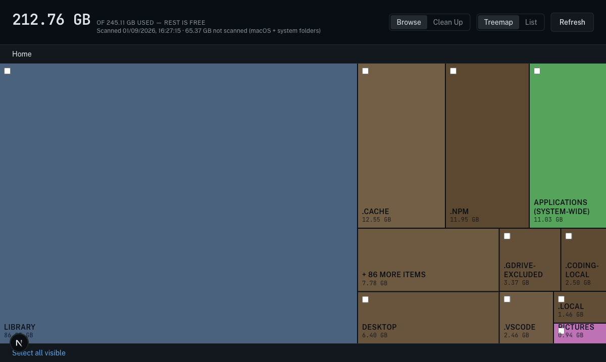
Same level, List view
Same real data, same level, just rows instead of rectangles — every real top-level folder in Deepak's home directory, sorted biggest first, each with a checkbox and a Protect action.
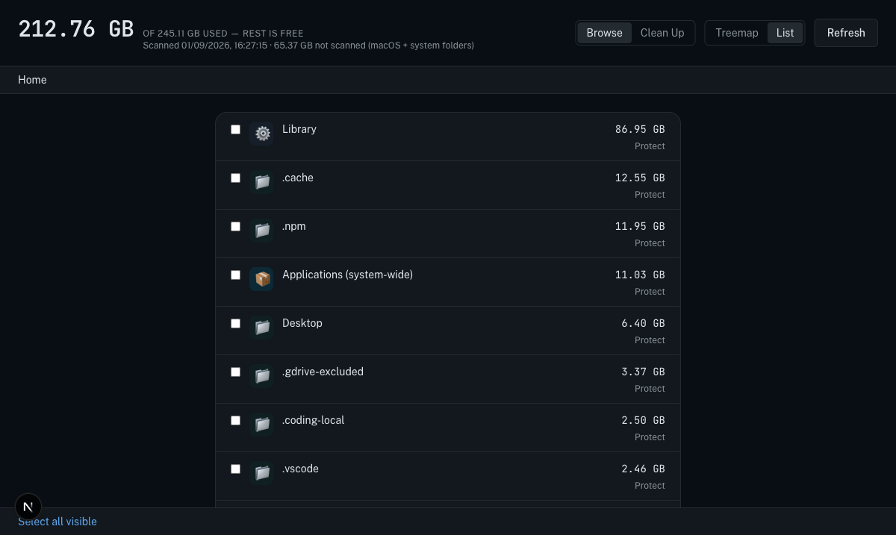
Real folder, one level deep
Clicking "Library" drills into its real children — Application Support, CloudStorage, Containers, Caches, and so on, each a genuine subfolder with a real size. Breadcrumb now reads Home / Library.
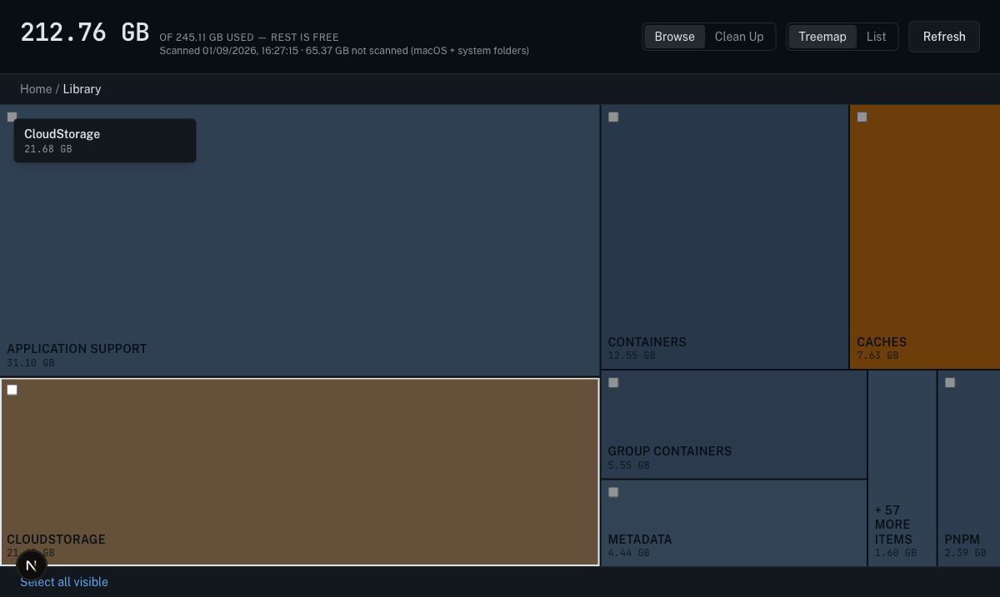
Two levels deep
Real per-app data folders: com.apple.wallpaper, Brave, Google, Code, FileProvider, Notion, and more — each sized by real disk usage.
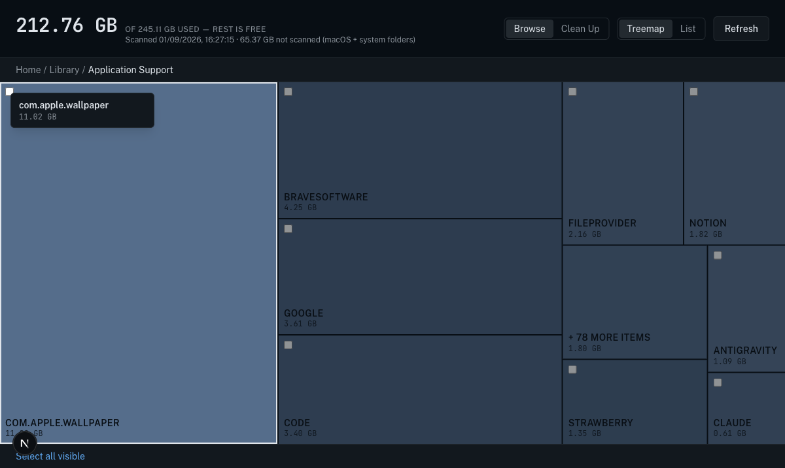
Consistency check
Exact same real folder, same children, List view instead of Treemap — proving the two view modes are just two renderings of the identical data and navigation state.
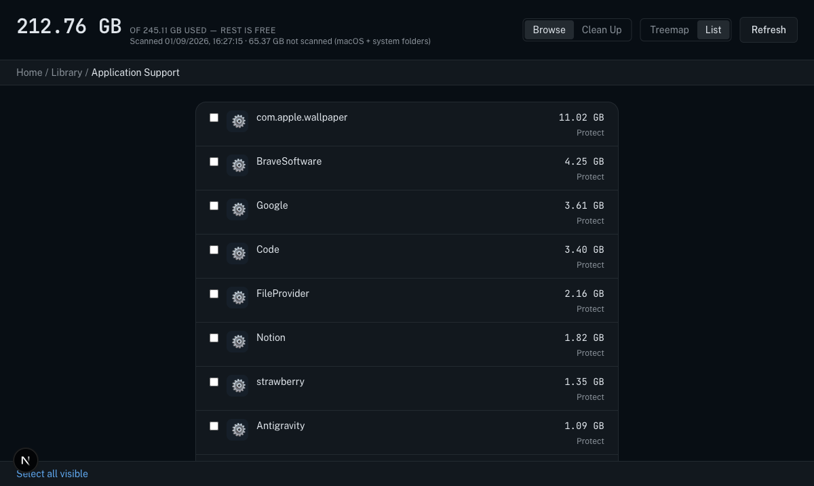
Inline cleanup badges while just browsing
Drilled all the way to a real VS Code workspace storage folder. Two real files here — state.vscdb and state.vscdb.backup — are flagged by the cleanup rules (stale, and a duplicate of each other), and their CAUTION badge + full reason show up right here, inline, while just browsing normally. No separate screen needed to see why something's flagged.
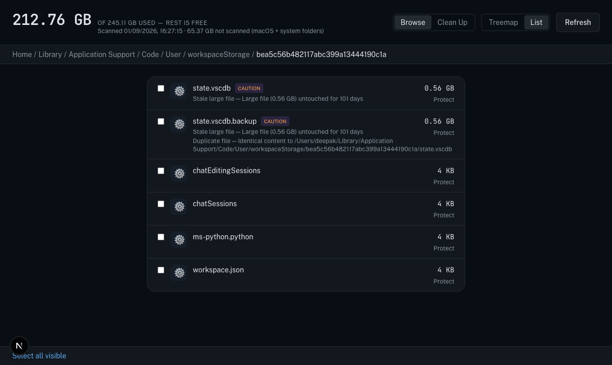
Same flagged files, Treemap view
The CAUTION badges render on the treemap cells too — same data, same flags, same interaction, just shaped differently.
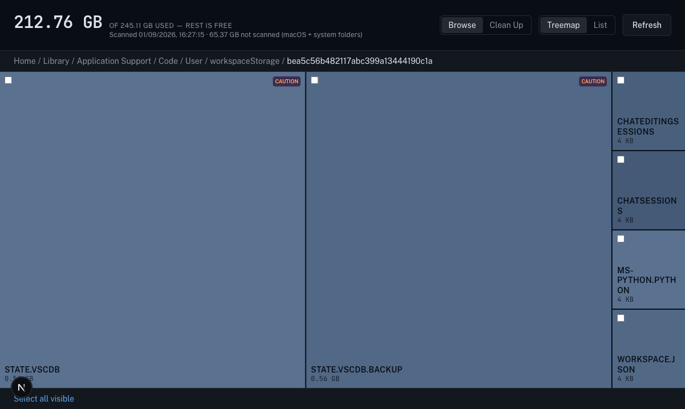
Selection cart appears
Checking the box on state.vscdb (0.56 GB, real) brings up the sticky selection bar at the bottom — this state persists as you keep navigating, including switching to the Clean up tab.
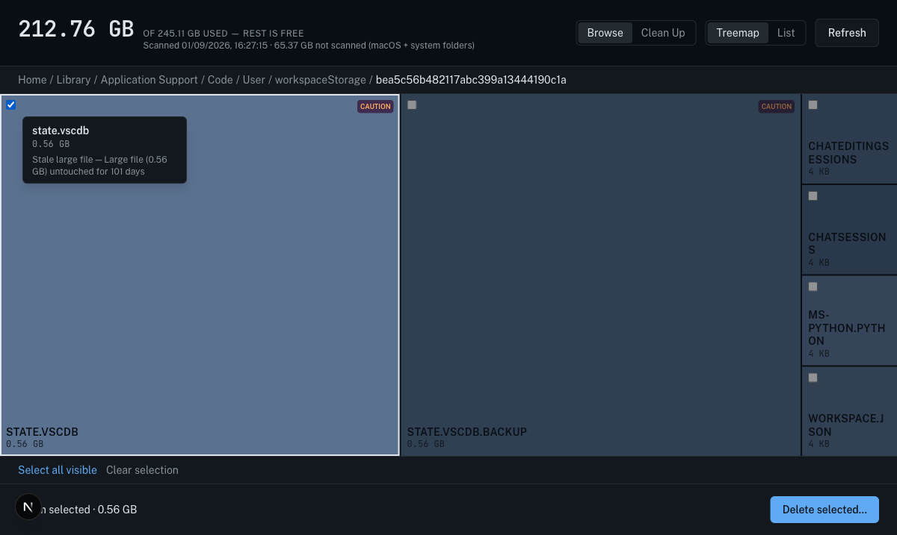
The flagged list, real data
Switching tabs to Clean up shows every real item the deterministic rules flagged across the whole disk — stale caches, old installers, duplicate files, stale large files — ranked by size, each with its real path and a plain-English reason. The selection from Step 8 is still shown as active in the sticky bar (not visible in this crop, verified in-session: it read "1 item selected · 0.56 GB").
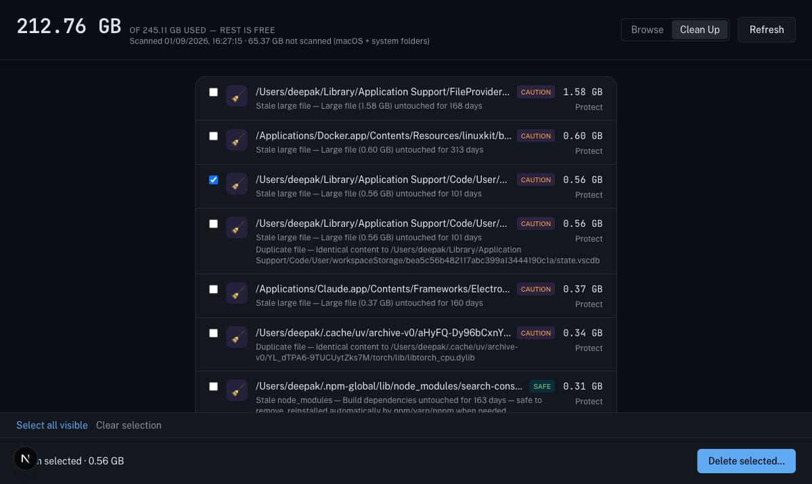
Cross-navigation selection cart, proven
Selected two more real items directly from the Clean up list (a 1.58 GB stale FileProvider database file and a 0.60 GB stale Docker file) — sticky bar correctly reads "2 items selected · 2.18 GB", matching 1.58 + 0.60 exactly.
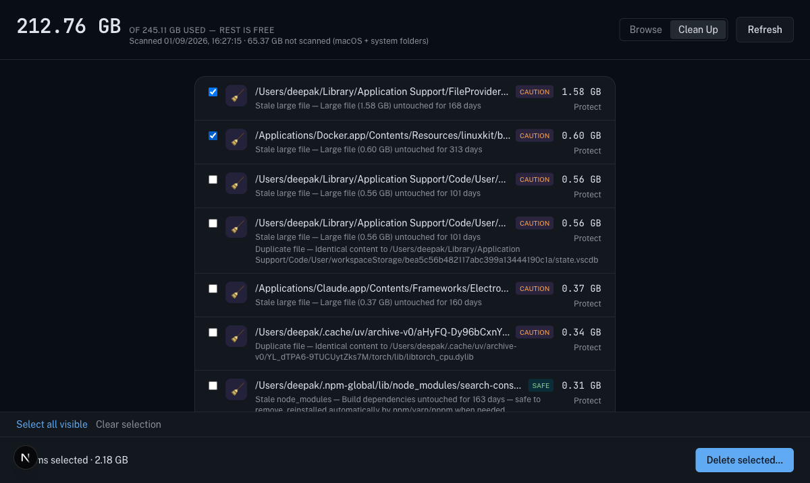
Exact real paths, exact real total, before anything happens
Clicking "Delete selected…" opens this modal listing the two real, full paths and the correct combined total (2.18 GB) before anything is touched. This was cancelled — nothing was deleted during this walkthrough.
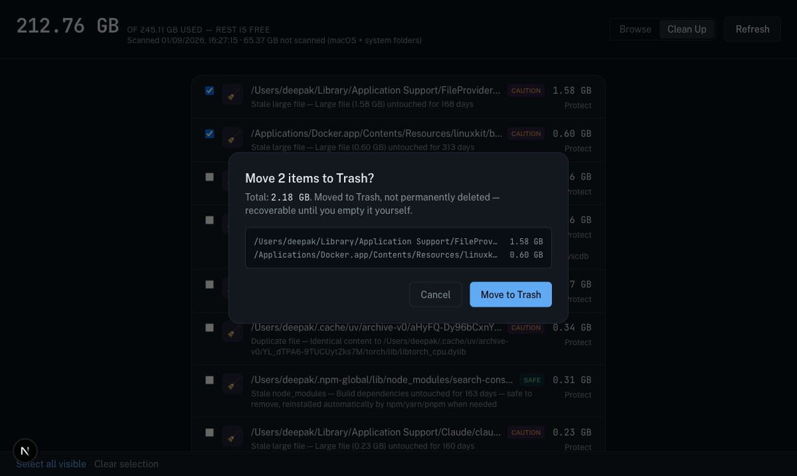
Marking a real item as never-delete
Clicking "Protect" on the FileProvider database file immediately shows a 🔒 PROTECTED badge and removes its Protect/checkbox controls. This was undone immediately after the screenshot (unprotected via the API) so the app is back to a clean state.
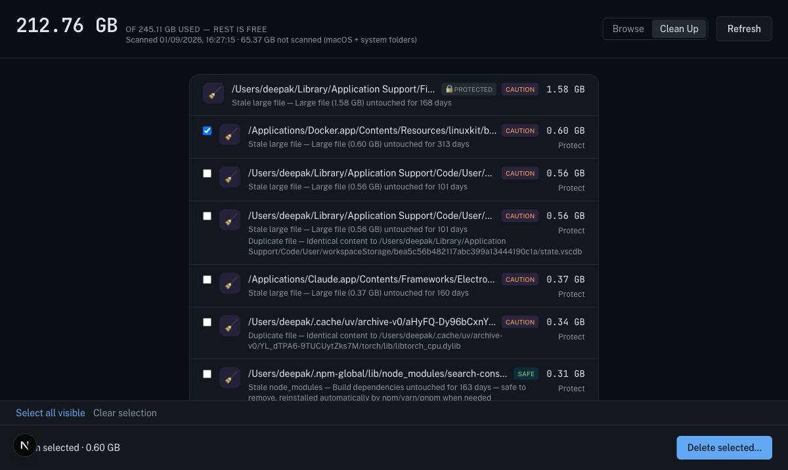